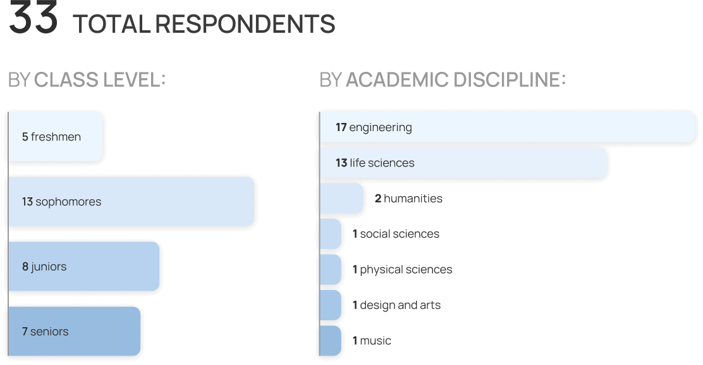
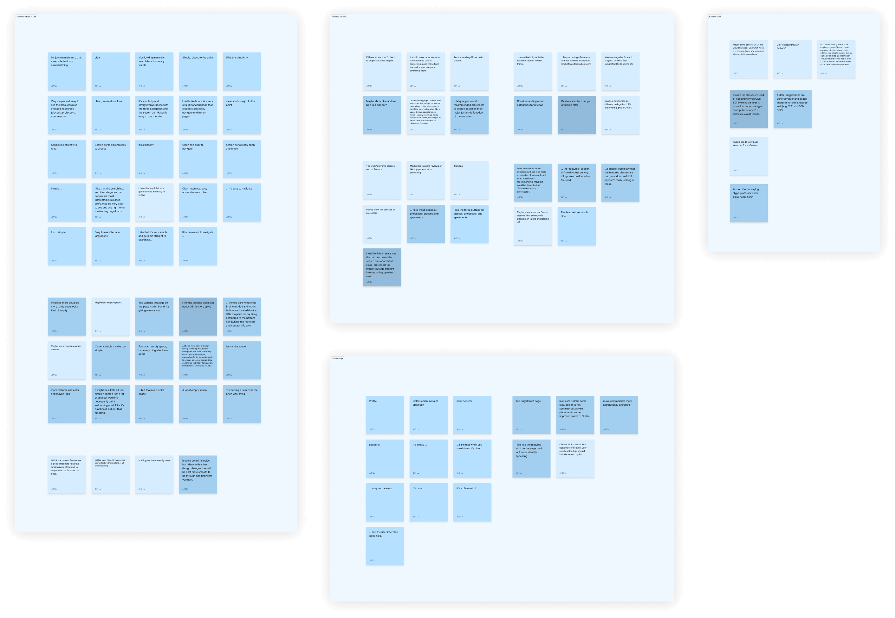
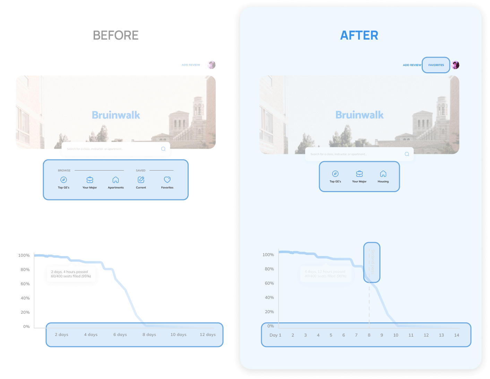
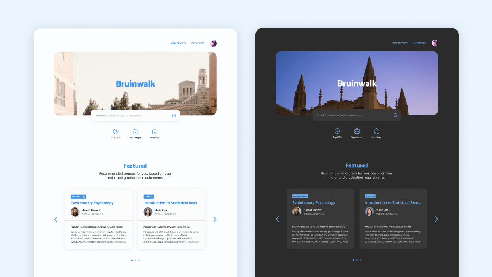
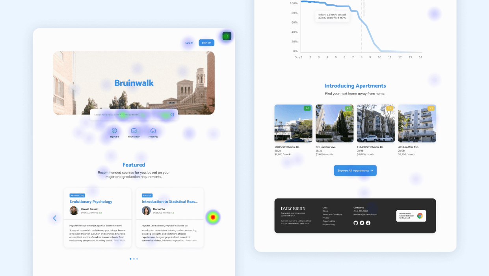
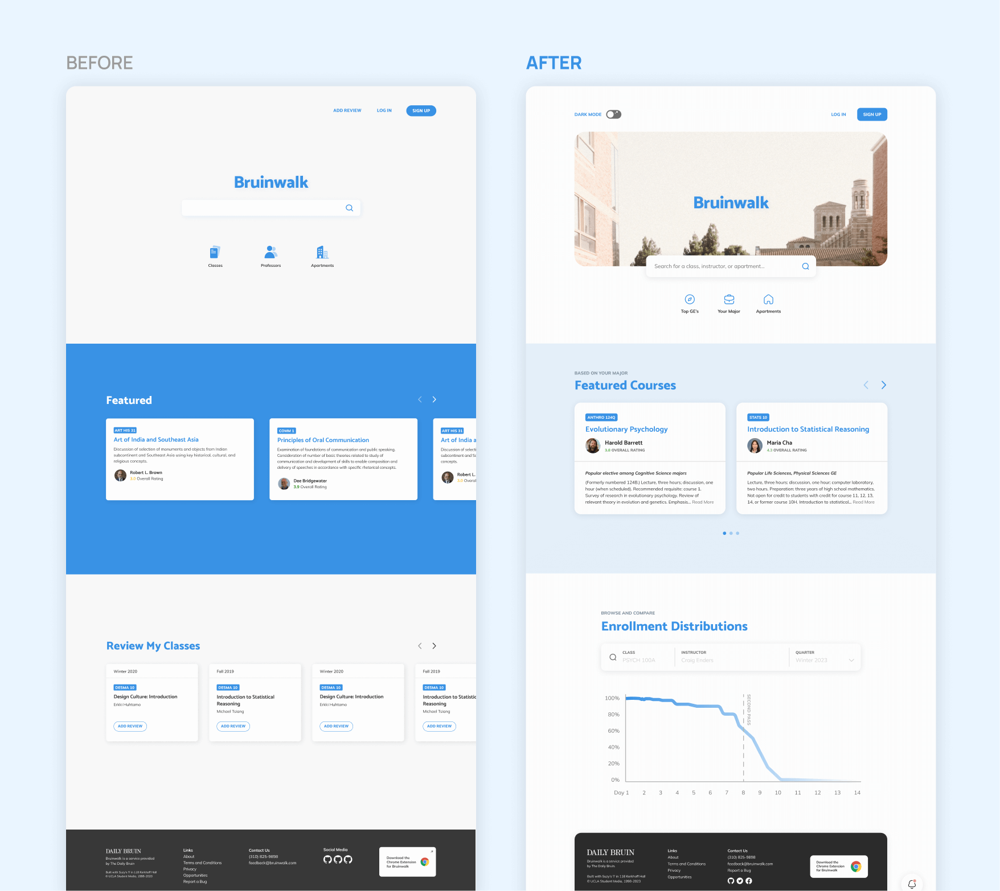
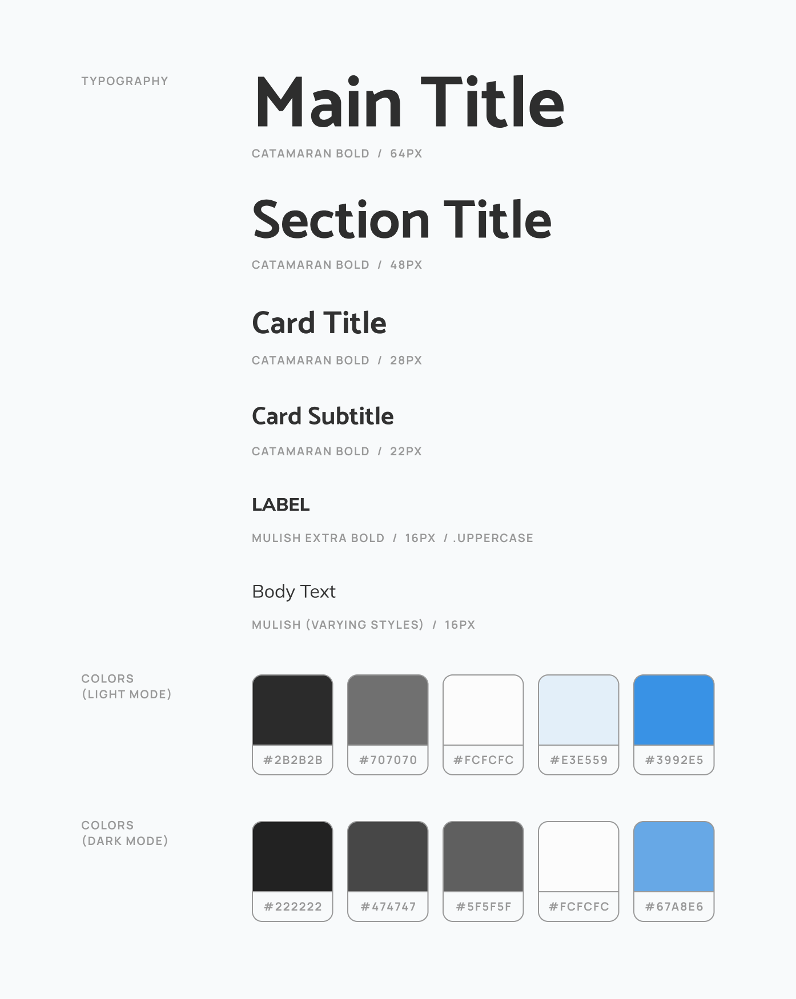

Redesigning UCLA's official academic reviews site to boost conversion rates by 89%.
Timeline
Apr - Aug 2023
Platform
Website
Role
Product Designer
Toolkit
Figma
View the Project
Bruinwalk is UCLA’s official website for students to share anonymous reviews of courses, instructors, and apartments. Put simply, it’s the UCLA version of Rate My Professors! Bruinwalk’s mission is to help create a comprehensive snapshot of life at UCLA, for the betterment of all current and future students. It takes its name from Bruin Walk, the main campus thoroughfare that UCLA students use to walk to class each day.
Although all research and designing for this project was done solo, I had 2 other product designers by my side (Gale, Rachel) with whom I could bounce ideas off and receive feedback. Being the youngest of the team, I was fortunate to be able to learn a lot about college, life, and the design industry through them!
During the 2022-23 school year, a significant amount of users began switching to Bruinwalk’s main competitor, Hotseat, after they released their enrollment trends feature That is, with Hotseat, students would have the ability to view a graph of how quickly spots in classes fill up, based on past enrollment data. But there’s another problem here: Bruinwalk also had enrollment trends—people just didn’t know about it.
Bruinwalk’s landing page, pre-redesign. Enrollment trends nowhere to be seen :(
Beyond the central search bar, Bruinwalk’s old home page had nothing more than a carousel displaying “Featured” (read: seemingly randomly generated) courses. As a result, the old landing page left users with more questions than answers by failing to include relevant content. Part of the challenge with my redesign, then, was determining what features were most valued and frequently used by students. This way, I could ensure that the most important features get surfaced appropriately (spoiler alert: enrollment trends were indeed one of them!)
Hotseat launched in 2021, while Bruinwalk has been around since 1998. Although Bruinwalk’s website had undergone redesigns since then, it still wasn’t quite up to par with Hotseat’s more modern look. Since aesthetics were cited as a secondary factor in the decision to use Hotseat over Bruinwalk, I knew I wanted to revamp Bruinwalk’s landing page to give an all-new, enticing first impression that would stand as a worthy adversary in this beauty pageant of the digital age.
How might we redesign the face of Bruinwalk to help reinforce ourselves as UCLA’s premier reviews site?
Although I had my personal opinions about the old landing page, my first course of action was to see what other people thought about it. My goal was to first validate that the landing page actually presented a problem space in the first place, then hear thoughts directly from the UCLA community about how the page could be improved. I advocated for getting insights from as diverse a range of voices as possible, since I knew that different students might have different expectations and reasons for using Bruinwalk.
Hearing from over 30 interviewees meant that I was given a lot of data to work with—some responses even contradicted others! In order to garner actionable insights from the tangle of information, I laid every data point out into an affinity map, where a few distinct “categories” of feedback came into view, making research synthesis much easier.
While some praised the current landing page for its minimalist and clean aesthetic, 49% of participants expressed that the current design was plain, lacked character, or had too much whitespace. Therefore, I made it a goal to preserve the landing page’s to-the-point simplicity, while making additions to breathe new life into the page and embody UCLA’s reputation as school that works hard and plays hard.
It's a little bit too simple. There's just a lot of space... I wouldn't necessarily call it welcoming at all. It's functional, but not that amazing.
45% of respondents pointed to the Featured section as a major source of untapped potential. Most of the time, the section’s so-called “featured” courses were in subjects completely unrelated to the viewer’s major, creating an experience that felt impersonal at best, and bewildering at worst. Upon realizing this, I made it a mission to turn the Featured section into a place where students could truly go to find course recommendations.
I feel like the "featured" section could use a bit more explanation. I was confused as to what it was recommending.
Using the current landing page as a starting point, I began making changes to both the visuals and content. Behind every alteration was a desire to make the page align with the design goals I set out in the beginning, and build upon the insights I gained from initial user interviews. To this end, I kept the visual design simple, but enhanced it with new personalized and relevant features.
After getting my preliminary ideas down, I presented the initial wireframe to some end users, as well as to my Bruinwalk colleagues. After hearing some of their thoughts in these informal feedback sessions, I felt more confident refining what I’d come up with thus far and iterating upon aspects that needed more clarity.
At this point, I also began experimenting with creating a dark mode for landing page! Although it came somewhat from out of the blue, I figured this feature might be worth exploring since I was inspired by past interactions with people who prefer to use dark mode whenever they can on their devices and apps. Even if it got scrapped, I figured it wouldn’t hurt to explore the possibility!
Next, I assembled a working prototype—complete with a dark mode toggle—and gathered 12 participants to try out my designs. For this step I opted to use Maze, a testing software previously unfamiliar to me. Although I missed the back-and-forth communication that comes with live moderated testing, with the help of Maze I generated a heatmap of how users interacted with the design. This proved to be a fascinating insight in and of itself: only 12% of people were still engaged by the time you get to the bottom Apartments section!
Participants reacted positively to the new dark mode! However, without putting much thought into it, I’d hid the toggle button as a dropdown option under the user’s profile picture—an element that was rarely used in Bruinwalk’s current flow. During usability testing, this strategy failed spectacularly: switching to dark mode received an average easiness rating of 2/5. Obviously, this was not ideal, so I surfaced the toggle to be displayed directly on the landing page, and designed a custom sun/moon toggle to represent it.
Although Bruinwalk is constantly adding features that branch out from classes and instructors, the student body at large still sees Bruinwalk first and foremost as a site for academics. As such, when participants saw the new Apartments section I’d added at the bottom of the page, it came off as jarring, out-of-place, and almost like an advertisement. After seeing this, I reasoned that placing a floating notification on the corner of the screen would be a more subtle yet effective way to introduce the new feature.
One of the key features I added as part of my redesign was the clickable enrollment distributions component, where users could enter a class and instantly see its past enrollment data. However, only 27% of testing participants realized the tool was interactive. Looking back, it’s easy to see why: there was no indication that the tool wasn’t just a static image. To remedy this, I added iconography and verbiage to help clarify the feature for users.
Before the redesign, Bruinwalk’s landing page didn’t do justice to everything the website had to offer. In revamping it, I hope that I’ve kept its original charms while helping it better represent the awesome school that is UCLA!
Brand new quality of life updates including past searches, more relevant quick links, and improved natural language processing (i.e. allowing users to type “CS” instead of “COM SCI”, as it’s called in UCLA’s registry) help get users where they need to be more quickly. Although it’s a small component, this search bar is really Bruinwalk’s bread and butter, so I emphasized implementing these additions to make searching feel as seamless and user-friendly as possible.
Gone are the days of irrelevant (and frankly, bewildering) content in the Featured section! It now contains courses directly applicable to the user, based on the major and graduation requirements associated with their account. With this change, the landing page feels more personalized, and students can interface with it directly to quickly find suggestions for classes to take.
While this feature was already in Bruinwalk, tucked away when viewing the page for a specific course, one of my goals from the outset of this project was to bring more focus onto it. However, I didn’t want to stop at simply moving it. For the first time, the tool allows users to quickly search for and compare the distributions for different courses or instructors: a common use case for enrollment data.
Creating a style guide that could adapt to both “halves” of the website proved challenging. As I would quickly realize, adjustments had to be made at every corner in order to maintain accessibility and a pleasant viewing experience across both modes, like adding subtle borders to search bars in dark mode to ensure clarity as to where the element starts and ends. As the design system grew, I turned to Figma’s new variables feature to ensure consistent implementation of styles, halving the time it took me to wireframe and prototype!
The new page looks so much better and more clear… Both modes look great, and the new dark mode will be so helpful!
This project was truly a testament to the importance of staying up to date with the latest news in the world of design. By learning and taking advantage Figma’s new advanced prototyping and variable tools, I did a favor for my future self by making the design process much easier, and making sure that components would be implemented consistently in the process!
Although familiarizing myself with these new features was challenging, my background in software development helped me more quickly grasp concepts like tokenization, which also opened my eyes to the ever-increasing interplay between design and development. Figma (and design as a whole) is moving in a very exciting direction, and I cannot wait to see where it goes next!
One remarkable thing about my work with Bruinwalk was that I was always excited to tell the people around me about it. The fact that I was working on a project for an official UCLA site—a site that would be used by thousands of students, my own friends among them—was an amazing experience. In a way, this project was like my own small way of giving back to the school that’s given so much to me.
My enthusiasm made me realize that I create my best work when I’m designing for something that I’m truly passionate about. Bruinwalk showed me that design becomes filled with new wonder and excitement when it’s combined with another thing that I love. It’s a lesson that I’ll hold onto and apply to not just my career, but my life.